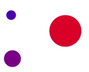
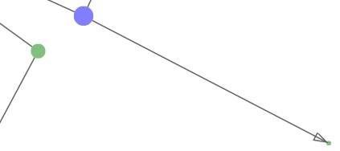

?
1337
d3
Visualizing Twitter
(Click for Graph Help)

More nodes in a subgraph means a larger radius
No user from any one subgraph is connected to a different subgraph
Small subgraphs are cold while large subgraphs are hot
(Click for Subgraph Help)

Arrows denote the direction of the relationship
The larger the node, the more connected the user
The short the link is, the stronger the relationship
The number near the dots shows the total nodes in the subgraph
Click the dots above the Menu tab to return to the subgraphs screen
Click and drag to pan around
Zoom in/out with the mouse wheel or the slider in the menu
Search for specific usernames to center the graph around them
Bring up this dialog again by clicking the '?' in the menu
Click the menu tab to get started
Fetching Data From Database...
Building Visual...